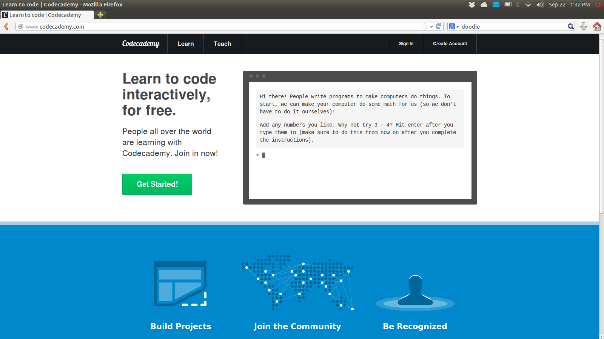
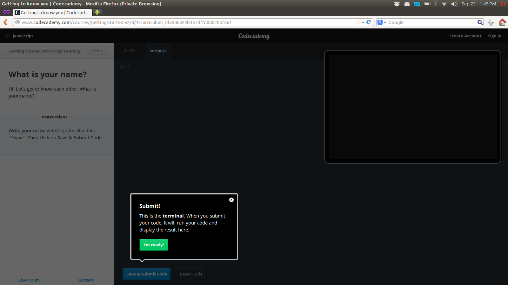
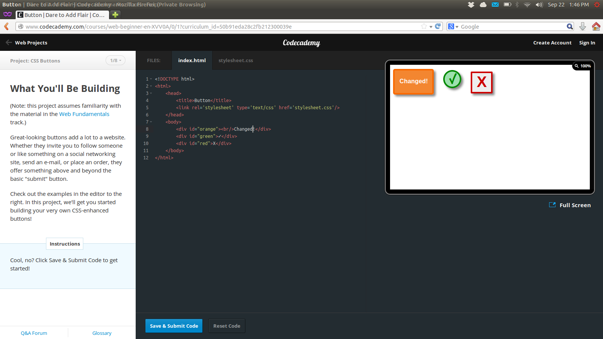

Inspiration: Code Academy
By Luke Metz
One interface our team particularly liked was Code Academy. Code Academy is a new website the goal of which is to teach web development skills to all. Their site employs a number of features we should consider for inspiration. These include their homepage, which encourages the user to dive right in and start trying stuff, their tutorial overlay to ensure that everybody knows what they are doing, as well as their user feedback system for working with their editor.
When first loading up Code Academy, one is immediately met with the website’s goal in a large font, a giant "getting started" button, and a terminal to actually dive right in. This page does an amazing job both showing the user exactly where to go and starting them in on that process. Our site should incorporate features such as these to encourage our users to have the confidence to jump right in and find success. It's an encouraging mentality, especially for less technically savvy users.
The next good design decision Code Academy makes is its simplified interface. On any given page there are a small number of buttons and options from which to choose. At a quick glance, The user knows exactly what everything does and how to navigate. This feature is a great addition for those who might not be comfortable with technology. For something as general as room registration, we want to be able to serve a wide range of users just as Code Academy does.
FInally, Code Academy makes great use of feedback. As the user types, his or her work is automatically updated in the preview tab. If this is a little too much like magic for a user, he or she also has the option to save his or her work manually. When saved, the button becomes depressed and lets the user know his or her work is saved. This way of managing feedback is not just convenient but gives the user the assurance of knowing that the update went through.
Code Academy's easy-to-use features and simplified layout make it inviting and as such, it is a good model for us to study. Their purpose might be very far afield from our own but their delivery of information and the system they employ for managing their users has a lot to recommend it.